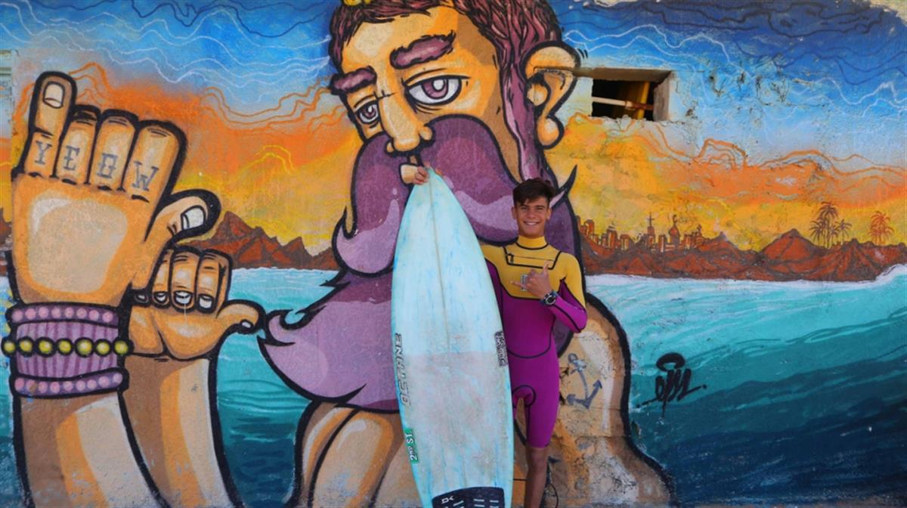

By: Tania Karas and Dalal Mawad in Jiyeh, Lebanon
Ali had never seen the sea until his family fled to Lebanon. After catching his first wave, he was embraced by the country’s fledgling surf community.
Ali Kassem lies flat on his surfboard, paddling and waiting for the sea to deliver a perfect wave. Suddenly, he aims his board toward the shore and rises to his feet, gliding forward in a curl of white surf. He makes it look effortless.
Despite his confidence in the water, 16-year-old Ali could not even swim until a few years ago. Growing up in landlocked Aleppo, Syria’s second city, he fled with his family to Lebanon in 2011. They settled in Jiyeh, an ancient coastal town 28 kilometres south of Beirut.
The area is home to Lebanon’s fledgling surf community. When Ali saw the locals riding the waves, he was mesmerized. He first taught himself how to swim. Then, for months he would perch on a beachside cliff studying each surfer’s technique and signature moves.“Surfing has taught me to be strong in life, that nothing is impossible.”
Now he is one of them, his gold-streaked hair testament to the many hours spent under the Mediterranean sun. Amidst all the difficulties of life in exile, this small stretch of beach has become his refuge. The surfers have become his second family.
“Surfing has taught me to be strong in life, that nothing is impossible,” Ali says. “If you want to do something, then you should do it.”
His mentor on the waves smiles as he recalls their first meeting and Ali’s early attempts at catching a wave. Thirty-four-year-old Ali El Amine is a Lebanese-American surfer who runs Surf Lebanon, a surfing club and training school. He and a friend spotted the younger Ali one chilly April day two years ago on their way back from scouting waves.
“We saw this little kid who had a styrofoam board waiting at the water’s edge,” El Amine recalls. Ali had evidently used a knife to carve a surfboard from a piece of trash he’d found on the beach.”
They did not think he would risk the choppy waters. It was too dangerous, especially without training or a proper surfboard and wetsuit.
“He got halfway out and we called him to come in because he didn’t have a leg rope and the water was still cold,” El Amine says.
Ali refused: “I told them no. I wanted to try.”
A shouting match ensued. El Amine coaxed Ali back onto the beach for a stern lecture on safety. But, impressed with the gutsy teen’s determination, El Amine gave him a real board, wetsuit, and surf lessons. “The rest,” he says, “is history.”
“The first wave I rode, I was able to stand,” Ali says. “I loved it. I came back every day. It’s an amazing feeling.”

Ali with his surfboard on the beach. © UNHCR/Hussein Baydoun
For the last two years, Ali has met El Amine and his crew on the beach anytime the wind and waves are ripe for surfing. Among the group, Ali’s status as a refugee doesn’t matter. He rides waves along with Lebanon’s best. They are competitive but look for each other, supporting one another through new tricks and wipeouts.
“He’s a human, at the end of the day,” El Amine says. “He breathes and he bleeds. I don’t look at it as if he’s from a different country or religion. He just has the hunger to surf. And that’s all that matters.”
El Amine treats his young protégé – who he calls “Little Ali” – as a younger brother or son, sometimes using surfing to reward high marks in school. Low grades equal less time on the surfboard.
Surfing also lets Ali focus on the present and future after a painful past. His elder brother was killed five years ago when their neighborhood bakery in Aleppo was bombed while he was out buying bread. The family left for Lebanon shortly afterward. Ali says he can’t remember much else about Syria.“When I surf I forget everything.”
“When I surf I forget everything,” Ali says. “Even if I had something on my mind, once I am in the water I forget.”
Lebanon hosts more than one million Syrian refugees – a massive number for a small country of at least four million people. Services are overstretched, with many refugees unable to access adequate housing, medical care or education.
Ali considers his family fortunate to live in an apartment. But money is tight. His father, a day laborer, cannot find enough work to support his five children in Lebanon.
Financial troubles led Ali to leave school temporarily. Sometimes he picks up work in the surf shop to help make ends meet, but he plans to resume his studies this summer.
His dream is to compete in a world surfing championship and to travel abroad in search of the best waves. And when the war is over, he hopes to go back to Syria and open a surf school.
SOURCE: UNHCR